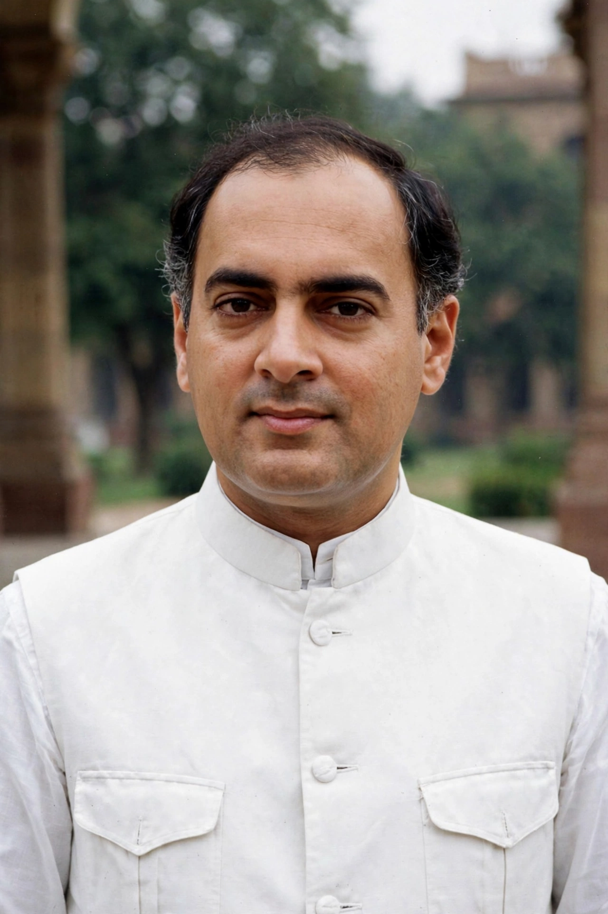

Rajiv Gandhi
| Rajiv Gandhi | |
|---|---|
 | |
| Born | 20 August 1944, Bombay, British India |
| Died | 21 May 1991 (aged 46), Sriperumbudur, Tamil Nadu, India |
| Office | Prime Minister of India, 1984–1989 |
| Party | Indian National Congress |
| Spouse | Sonia Gandhi |
| Parents | Feroze Gandhi; Indira Gandhi |
Rajiv Gandhi (20 August 1944 – 21 May 1991) was an Indian politician who served as the sixth Prime Minister of India from 1984 to 1989. The eldest son of Indira Gandhi and grandson of Jawaharlal Nehru, he became India's youngest prime minister at the age of 40 after his mother's assassination. He was assassinated by an LTTE suicide bomber in 1991.
Early life
Rajiv Gandhi was educated at the Doon School, Trinity College, Cambridge, and Imperial College London, though he completed no degree. He trained as a commercial pilot and flew for Indian Airlines. In 1968 he married Sonia Maino, an Italian student he had met at Cambridge. Long reluctant to enter politics, he was drawn in after the death of his younger brother Sanjay Gandhi in a plane crash in 1980, and was elected to Parliament from Amethi in 1981.
Prime ministership
Gandhi took office on 31 October 1984, hours after Indira Gandhi's assassination, and weeks later led Congress to the largest parliamentary majority in Indian history. His government promoted economic modernisation, expanded telecommunications and computing, lowered the voting age to 18, and strengthened panchayati raj (local self-government) — reforms completed by the 73rd and 74th constitutional amendments after his death. Abroad, he signed the Indo-Sri Lanka Accord of 1987 and deployed the Indian Peace Keeping Force to Sri Lanka, a costly entanglement with the LTTE.
His tenure was also marked by controversies including the Shah Bano case, the opening of the locks at the Babri Masjid site, and the Bofors scandal, allegations of kickbacks in an artillery purchase that badly damaged his government. Congress lost the 1989 general election.
Assassination
On 21 May 1991, while campaigning in Sriperumbudur near Madras (Chennai), Gandhi was killed by a female suicide bomber of the LTTE, which sought revenge for the IPKF intervention. He was posthumously awarded the Bharat Ratna, India's highest civilian honour.